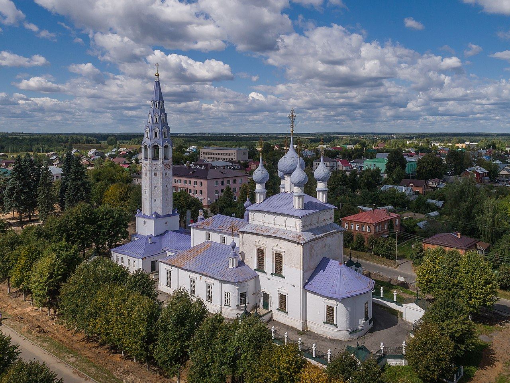

Палех
Палех. Название, прославленное на весь мир мастерством художников, не всегда ассоциировалось с красочными шкатулками. По преданию, в леса на берегу речки Палешки бежали иконописцы из Владимира и Суздаля. На месте выжженного леса осели и построились. До революции писали иконы, а новая власть, к религиозной тематике суровая, заставила взяться за светские мотивы — сказки, предания, былины.

Государственный музей палехского искусства основан 8 мая 1934 года и назывался он «Музей древней живописи». В ноябре 1934 года изменено название музея на Государственный музей палехского искусства. Открытие музея состоялось 13 марта 1935 года в дни празднования 10-летия Артели древней живописи. Эта дата официально считается днем рождения музея.
Храм Воздвижения Честного Креста Господня. Дата основания — не позже XVI в. Дата постройки последнего здания 1762–1774 гг. Двусветный четверик с трехчастным алтарем увенчан аттиковым ярусом с декоративными кокошниками и пятиглавием, декор выдержан в духе зодчества кон. XVII в. С запада к нему примыкает обширная трапезная, соединяющая храм с высокой столпообразной шатровой колокольней.